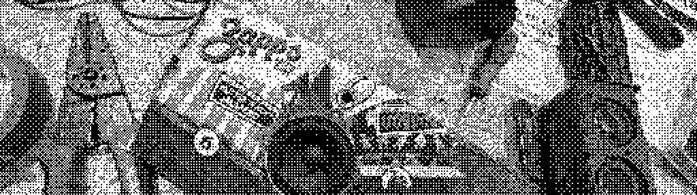
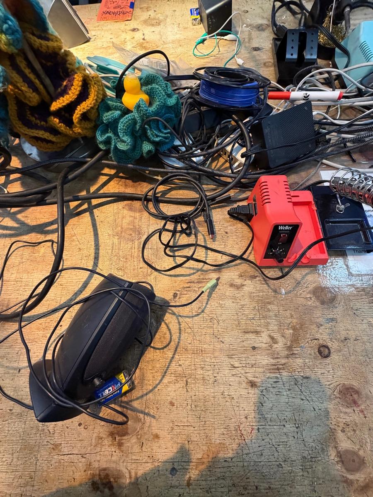
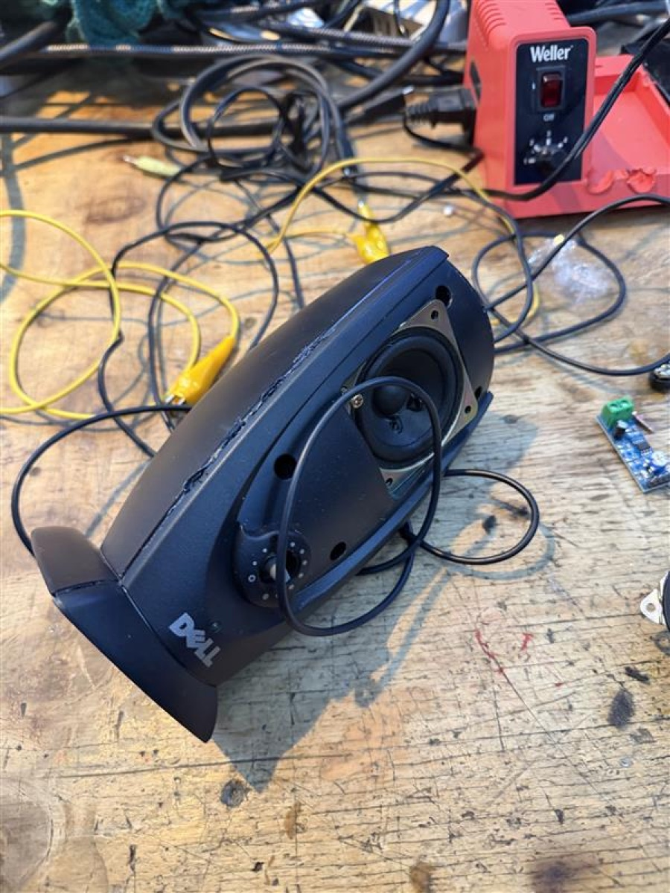
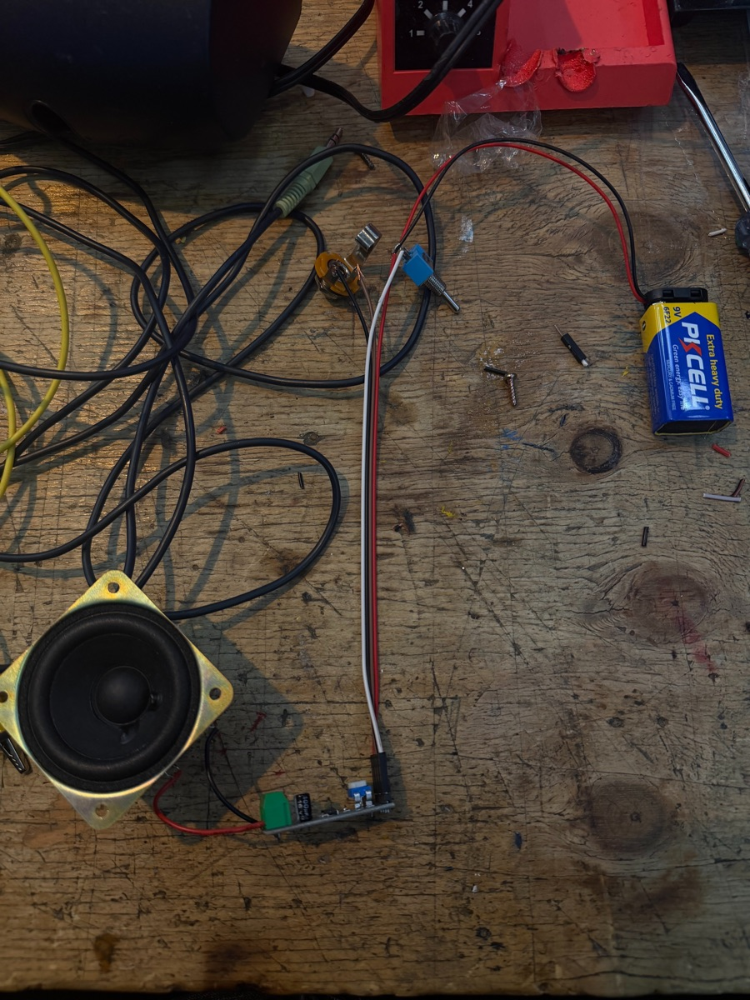
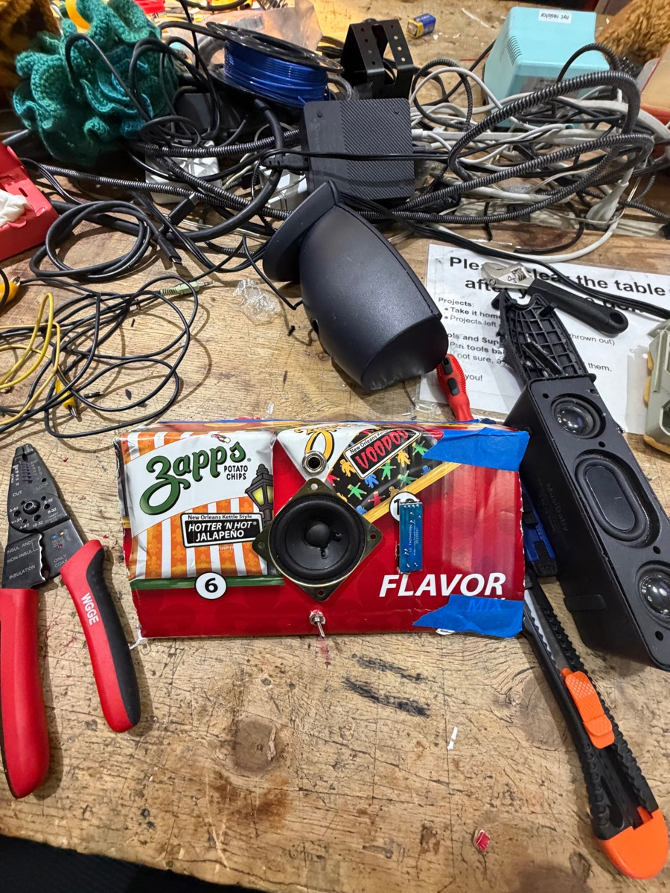
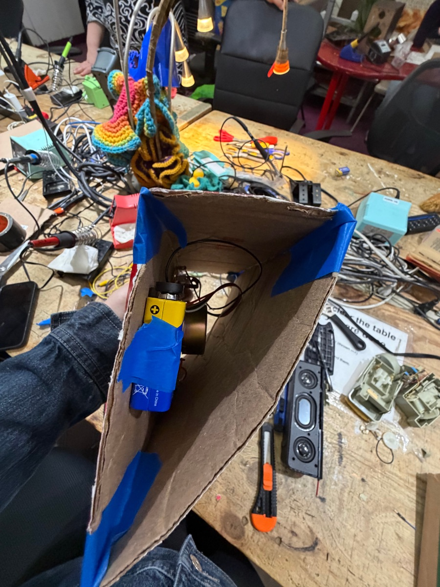

Materials used
01 | Fetch speaker component from e-waste
I used an assortment of scissors and screwdrivers to cut away the mesh and pry open the plastic.
I was able to unscrew the speaker component once the speaker guard was removed.


02 | Connect all materials

What is an LM386 audio amplifier? (hover) LM386: a low-voltage audio power amplifier chip that boosts a small signal enough to drive a speaker.
02.1 | Soldering and realizing I burnt my hair..
02.2 | Hear that screeeeeaaaammmm
03 | Build a home for the amplifier
I forgot to take progress pictures, but here is the final product!!
The last step was housing all of the components. I did that via a Zapp’s chip box and masking tape.

